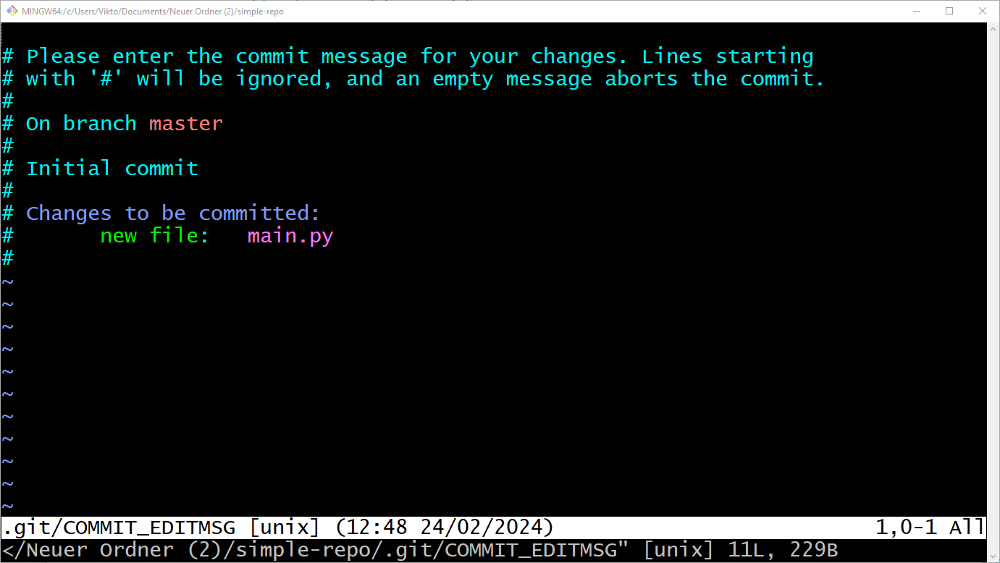
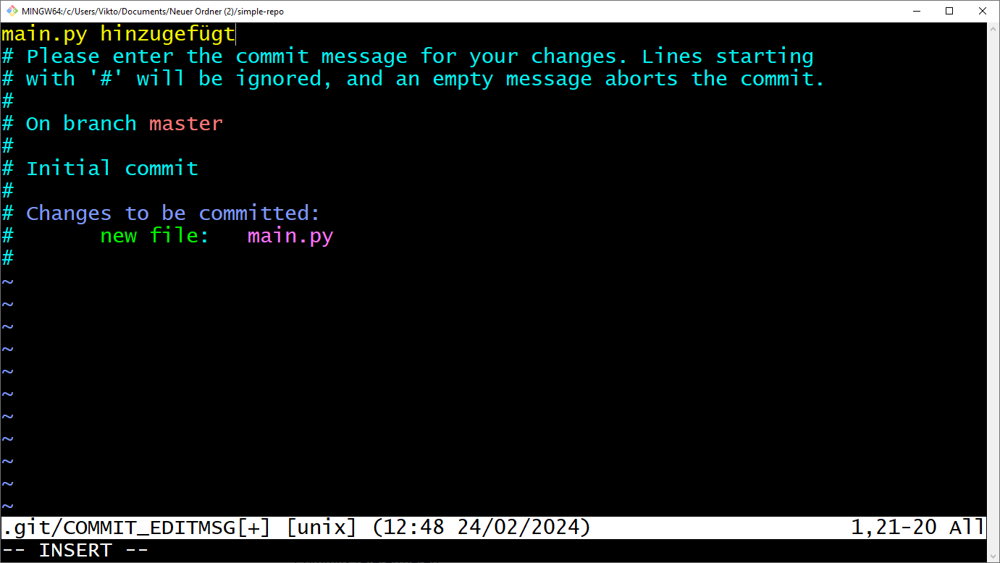
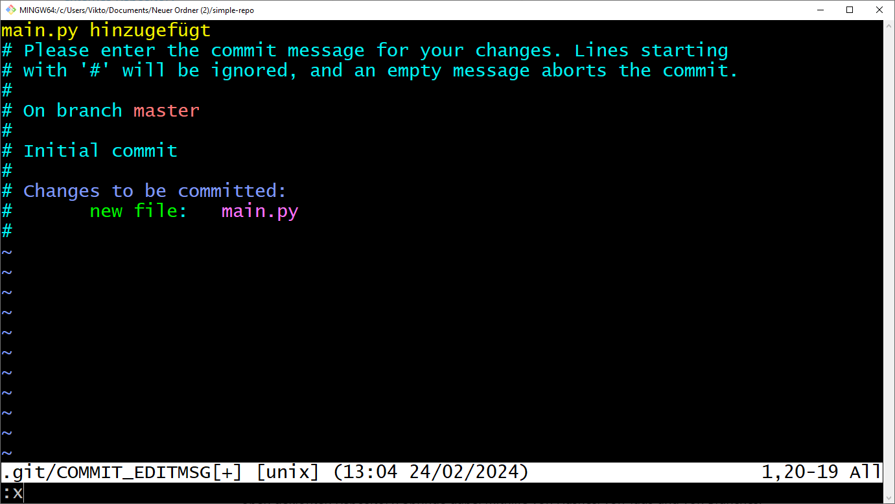
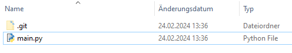
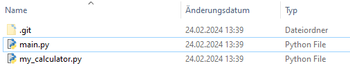

Einführung in Git: Lokales Arbeiten¶
Problem¶
Stell dir vor, du arbeitest, mit anderen an einem Projekt. Wie arbeitet ihr zusammen?
- Kommunikation über E-Mail (Dateien als Anhänge austauschen).
- Gemeinsames Laufwerk, auf das alle Projektbeteiligten Zugreifen können.
- Paralleles Arbeiten an einer Datei, die in der Cloud liegt, wie mit Google Docs oder Microsoft Word.

Lösung: Versionieren mit Git!¶
Git ist ein Versionsverwaltungssystem, um im Team gemeinsam einfach und sicher an Projekten zu arbeiten.
Git ermöglicht:
- Speicherung, Einsicht und Wiederherstellung von verschiedenen Projektversionen.
- Eine beliebige Anzahl von Projektversionen.
- Übersicht über alle verschiedenen Projektversionen.
- Die Differenz zwischen zwei Projektversionen ansehen.
- Verschiedene Projektversionen zu einer zusammenführen.
- Neue Projektversionen basierend auf beliebigen alten Projektversionen zu erstellen.
- Nachverfolgbarkeit (Wer erstellte welche Änderung?) mit Begründung.
- Paralleles Arbeiten.
- Einzelnes Arbeiten (ungestört).
- Offline Arbeiten (Unabhängigkeit vom Internet).
1. Aufbau von Git:¶
Ein Projekt wird dabei in einem Repository gespeichert. In einem Repository liegen alle Versionen des Projektes vor, die jemals von gespeichert wurden.
Eine einzelne Projektversion wird in einem Commit gespeichert. Man kann es sich wie ein Bild vorstellen, dass man vom Projekt zu einem gewissen Zeitpunkt erstellt hat. Man kann dann immer wieder den Zustand vom Projekt auf den im Commit festgehaltenen Zustand wieder herstellen. (Man stellt also den Zustand auf dem Bild wieder her.)
Der Working Tree ist die Version deines Projektes, die im Moment auf deinem Computer verfügbar ist und betrachtet und bearbeitet werden kann.
Der Index/Staging Area ist eine Datei von git, in der hinterlegt ist, welche Inhalte beim Erstellen eines neuen Commits tatsächlich gespeichert werden sollen. Bei git müssen nämlich alle Änderungen, die du in einem Projekt vornimmt auch in einer neuen Projektversion (Commit) gespeichert werden. Es ist nämlich möglich auch nur bestimmte Änderungen auszuwählen, indem man nur diese der Staging Area hinzufügt. Dann werden auch nur diese Änderungen im neuen Commit gespeichert.
Ein Branch ist ein Zeiger auf eine Projektversion. Dieser ist nützlich, um bei den vielen Projektversionen die Übersicht zu behalten, was die aktuellsten Projektversionen sind. Mehr dazu später
Metaphorisch gesprochen
In dem Text unten tauchen die folgenden Objekte auf:
- Bücherregal
- Erster Tisch
- Zweiter Tisch mit Kamera
- Foto vom zweiten Tisch
- Zettel auf aktuellem Foto
Diese symbolisieren eines der folgenden Dinge aus dem git-Universium. Welches Objekt gehört zu welchem?
- Repository
- Index/Staging Area
- Branch
- Commit
-
Working Tree
Man stelle sich ein leeres Bücherregal vor.Auf dem Tisch arbeiten wir an einem Projekt (z.B. einer Motion Cutout Animation). Auf diesem Tisch befindet sich unsere aktuelle Projektversion.
Es gibt einen zweiten Tisch. Über diesen Tisch schwebt eine Kamera. Auf diesem zweiten Tisch können wir eine alles, was auf dem ersten Tisch liegt, mit einem magischen Knopf herüber kopieren. Wir können aber auch sagen, dass nur bestimmte Dinge auf den zweiten Tisch mit der Kamera kopiert werden. Alles, was wir mit dem magischen Knopf auf den zweiten Tisch gepackt haben, erscheint übrigens auch im Bücherregal und ordnet sich da schön ein.
Wir können jederzeit ein Foto vom zweiten Tisch machen. Dieses Foto können wir ins Regal legen. Das Projekt ist nun in einer neuen Version gesichert. Solange dieser Schrank existiert, ist sie für immer sicher.
Wir können nun jederzeit unseren Tisch wieder auf den im Bild gespeicherten Zustand bringen.
Auf dem aktuellsten Foto kleben wir einen Zettel, damit wir es später besser wiederfinden.
Lösung
| Metapher | git |
|---|---|
| Bücherregal | Repository |
| Erster Tisch | Working Tree |
| Zweiter Tisch mit Kamera | Index / Staging Area |
| Foto vom zweiten Tisch | Commit |
| Zettel auf aktuellem Foto | Branch |
1.1 Installation von GIT¶
Wir können Git auf den gängigsten Betriebssystemen wie Windows, Mac und Linux installieren. Tatsächlich ist Git auf den meisten Mac- und Linux-Rechnern standardmäßig installiert.
Falls git bei dir nicht installiert ist, folge dieser Anleitung.
Um zu sehen, ob Git bereits installiert ist, öffnen wir ein Terminal und führen Folgendes aus:
1 2 | |
2. Die Konfiguration von GIT¶
Sobald wir Git installiert haben, können wir es einfach mit dem Befehl git config konfigurieren.
1 | |
--global legt fest, dass diese Option für alle Repositories des aktuellen Nutzers
des Betriebssystems gilt.
Um die Liste der wirksamen Optionen auszugeben, tippen wir:
1 2 | |
Nutzer korrekt einstellen
Starte git und stelle sicher, dass der richtige Nutzername und E-Mail eingestellt ist.
Hinweis: Verwende den Befehl git config mit der Option --global, um die Einstellungen für alle Repositories des aktuellen Nutzers festzulegen.
Tipp
Denke daran, sowohl den Nutzernamen als auch die E-Mail-Adresse zu konfigurieren.
Lösung
Um den Nutzernamen und die E-Mail-Adresse korrekt einzustellen, verwende die folgenden Befehle:
1 2 | |
Diese Befehle setzen den Nutzernamen auf "Paul Kenntner" und die E-Mail-Adresse auf "paul@co-dex.de" für alle Git-Repositories des aktuellen Benutzers.
Um zu überprüfen, ob die Einstellungen korrekt vorgenommen wurden, kannst du folgenden Befehl ausführen:
1 | |
Dies sollte die eingestellten Werte für user.name und user.email anzeigen.
2.1 Lokales Repository erstellen¶
Um ein neues Repository zu initialisieren, müssen wir den Befehl git init verwenden. Es verwandelt das aktuelle Verzeichnis in ein Git-Repository und git beginnt mit der Verfolgung seines Inhalts:
Neuen Ordner erstellen:
1 | |
In den neuen Ordner wechseln (cd steht für "change directory"):
1 | |
Repository erstellen:
1 2 | |
Git erstellt darin auch ein verstecktes Verzeichnis namens .git. In diesem Verzeichnis werden
alle Objekte und Referenzen gespeichert, die Git im Rahmen unseres Projektverlaufs erstellt und verwendet.
Im Moment ist dieses Repository noch leer.
3. Dateien erstellen und zum speichern markieren¶
Wir können nun Dateien im Ordner simple-repo erstellen. Erstellen wir z.B. die Datei main.py:
1 2 | |
Wir können nun mit dem Befehl git status sehen, dass git registiert, dass eine neue Datei im Ordner ist,
diese Aber noch nicht versioniert wird:
1 2 3 4 5 6 7 8 9 10 | |
Wir können nun sagen, dass wir die Datei in die nächste Version mit aufnehmen wollen, indem wir
es mit dem Befehl git add main.py dem Index hinzufügen. Wenn wir hier keine Rückmeldung erhalten
ist alles gut gelaufen.
Wenn wir dann erneut den Status erfragen, sehen wir nun, dass die Datei dem Index hinzugefügt wurde:
1 2 3 4 5 6 7 8 | |
3.1 Ersten Commit erstellen¶
Wir können nun eine Versions unseres Projektes speichern, indem wir einen Commit erstellen mit dem Befehl
git commit. Wenn wir das tun, landen wir im VIM Editor. Keine Panik🧘♀️🧘♂️

VIM ist ein ausgefeilter Texteditor, der in der Konsole benutzt werden kann. Wir sind dazu aufgerufen hier die Commit-Message zu notieren. Das ist eine Nachricht, die beschreiben soll, was in dieser Projektversion neues passiert ist, im Vergleich zu der bisher genutzten Projektversion.
Für uns gibt es bei Vim nur drei wichtige Befehle:
- Drücke
i, um in den Insert-Modus zu kommen. Das erkennst du daran, dass ganz unten-- INSERT --erscheint. Du kannst jetzt im Text schreiben und mit den Pfeiltasten navigieren. Schreibe nun in die erste Zeile deine Commit-Message

-
Um den Insert-Modus zu verlassen dürcke
ESC. Jetzt kannst du den Text nicht mehr bearbeiten. -
Gebe nun
:xein, um zu speichern und den Editor zu schließen.

Wir haben nun den commit erfolgreich erstellt und können diesen mit dem Befehl git log untersuchen:
1 2 3 4 5 6 | |
Wir haben nun unsere erste Projektversion erstellt. Wir können diesen Zustand des Projektes zukünftig jederzeit wiederherstellen.
3.2 Weitere Commits erstellen.¶
Wir können nun weitere Projektversionen erstellen. Dazu fügen wir neue Dateien hinzu oder ändern bestehende.
Immer wenn wir das tun, können wir mit git status sehen, welche Änderungen nur im Working-Tree vorliegen
und welche wir mit git add bereits dem Index hinzugefügt wurden und so in der nächsten Projektversion (dem nächsten
Commit) dauerhaft persistiert werden.
Wir können z.B. eine neue Datei my_calculator.py erstellen:
1 2 3 4 5 | |
Wir können z.B. die Datei main.py erweitern:
1 2 3 4 5 | |
Mit git status wird uns nun gesagt, dass die neue Datei noch nicht versioniert wird und die zweite Datei
Modifizierungen aufweist, die noch nicht versioniert werden:
1 2 3 4 5 6 7 8 9 10 11 12 | |
Wir können nun die Änderungen einzeln dem Index hinzufügen, indem wir git add main.py und git add my_calculator.py
ausführen, oder wir lassen alles auf ein Mal mit dem Befehl git add . hinzufügen. Wir sehen dann mit git status,
dass die Datein dem Index hinzugefügt wurden:
1 2 3 4 5 6 7 | |
Wir können nun einen Commit erstellen. Um etwas schneller zu sein und nicht wieder in VIM zu landen, können wir
beim Befehlsaufruf direkt die Commit-Message mit angeben, indem wir das Flag -m mit einer Commit-Message
hinzufügen. Etwa so:
1 2 3 4 | |
Wir sehen nun, dass im git log zwei Commit auftauchen:
1 2 3 4 5 6 7 8 9 10 11 12 | |
Mit dem Befehl git log --all --oneline --graph kannst du alle Commits in Kurzform sehen, die in diesem Projekt
erstellt wurden. In dieser Ansicht kannst du mit den Pfeiltasten nach oben und unten navigieren und
sie mit der Taste q verlassen.
1 2 3 | |
Der Zeiger HEAD zeigt uns übrigens an, welche Projektversion wir derzeit als Ausgangspunkt unserer Arbeit betrachten.
4. Zwischen Projektversionen/Commits wechseln¶
Um von einer Projektversion zur anderen zu wechseln, nutzen wir die Befehle git switch oder git checkout.
Man gibt dann den Hash des Commits an oder einen Tag oder Branch, der auf den Commit zeigt.
Der Hash eines Commits kann mit dem Befehl git log ermittelt werden
und ist die lange Hexadezimalzahl in der ersten Zeile. In unserem Beispiel
wären das 58ea6a40d... und f8e4d3fc.... Bei git log --graph --oneline --all sehen wir
nur den Anfang von diesem Hash. Die ersten vier Zeichen eines Hash genügen normalerweise.
Ein Tag ist eine dauerhafte Referenz auf einen Commit, der verwendet wird, um z.B. Releaseversionen zu kennzeichnen. Hier verwenden wir diese noch nicht.
Ein Branch ist auch eine Referenz auf einen Tag, jedoch kann diese im Laufe der Zeit verschiedene
Commits referenzieren. Der einzige Branch, den wir hier bisher vorliegen haben ist master.
Wenn wir also auf den ersten Commit wecheln, können wir git checkout f8e4 verwenden. Wir sehen dann,
dass wir eine Warnung erhalten, dass wir im "'detached HEAD' state" sind, aber das ist erstmal
nicht so schlimm. Wir sehen nämlich auch, dass wir den alten Projektzustand mit nur einer Datei
wiederhergestellt haben.

Wenn wir dann zum aktuellen Projektstand zurückwechseln wollen, dann können wir das
über den Befehl git checkout master. Dann haben wir wieder beide Dateien.

Fremdes Repository untersuchen
Lade diesen Ordner herunter. Er enthält ein Git-Repository. Untersuche es mit Hilfe des Befehls:
1 | |
Beantworte folgende Fragen:
- Wie viele Commits gibt es?
- Wie viele Branches gibt es?
- Wie viele Tags gibt es?
Tipp
Denk daran, dass du das Repository zuerst entpacken und in das Verzeichnis wechseln musst, bevor du Git-Befehle ausführen kannst.
Lösung
Um die Informationen zu erhalten, führe folgende Schritte aus:
- Entpacke die ZIP-Datei
- Öffne ein Terminal und navigiere in das entpackte Verzeichnis
- Führe den Befehl
git log --all --oneline --graphaus - Analysiere die Ausgabe:
- Jede Zeile, die mit einem * beginnt, repräsentiert einen Commit
- Branches werden in Klammern angezeigt, z.B. (HEAD -> master)
- Tags werden ebenfalls in Klammern angezeigt, z.B. (tag: v1.0)
Diese Aufgabe hilft dir, die Struktur und Geschichte eines Git-Repositories zu verstehen und wichtige Git-Befehle zur Analyse zu üben.
Zwischen Projektversionen wechseln
Verwende das Repository aus der vorherigen Aufgabe (Bewerbung.zip).
- Wechsle zwischen verschiedenen Projektversionen mit
git checkoutodergit switch. - Springe zu mindestens einem Commit über den Hash, zu einem Tag und zu einem Branch.
- Untersuche die Unterschiede zwischen den Projektversionen.
Beantworte folgende Fragen:
- Welche Unterschiede kannst du zwischen den verschiedenen Projektversionen erkennen?
- Inwiefern sind die Commit-Messages hilfreich, um zu verstehen, was in den jeweiligen Commits passiert ist?
- Welche Methode (Hash, Tag, Branch) findest du am einfachsten zu verwenden und warum?
Lösung
-
Unterschiede zwischen Projektversionen:
- Änderungen im Inhalt von Dateien
- Hinzugefügte oder gelöschte Dateien
- Strukturelle Änderungen (z.B. Verschieben von Dateien)
-
Nützlichkeit der Commit-Messages:
- Gute Commit-Messages sollten kurz und prägnant beschreiben, was geändert wurde
- Sie helfen, den Zweck und Kontext der Änderungen zu verstehen
- Qualität der Messages kann variieren (einige könnten informativer sein als andere)
-
Methoden zum Wechseln zwischen Versionen:
- Hash: Präzise, aber schwer zu merken
- Tag: Einfach für wichtige Meilensteine oder Releases
- Branch: Praktisch für aktive Entwicklungslinien
gitGraph
commit id: "0f3c214"
commit id: "0fb8d7"
branch zeugnisse
checkout zeugnisse
commit id: "03ddaff"
commit id: "a5a60d4"
checkout main
merge zeugnisse id: "1842726"Hilfe zur Selbsthilfe
Untersuche, was der Befehl git help tut.
Was passiert, wenn du die folgenden Befehle ausführst:
1 2 3 4 | |
Erkläre, was die Bedeutung der verschiedenen Klammern bei Anzeigen von git help bedeuten.
Welche Bedeutung haben
- die spitzen Klammern
<...>? - die eckigen Klammern
[..]? - die eckigen Klammern mit Pipes
[..|..|..]? - die runden Klammern mit Pipes
(..|..)? - Warum wird der untersuchte Befehl mehrfach bei "usage" aufgeführt?
Lösung
Der Befehl git help zeigt eine Übersicht der Git-Befehle und deren Verwendung an.
Die ersten drei Befehle (git --help init, git help init, git init --help) rufen alle die Hilfe für den Befehl init auf und zeigen detaillierte Informationen zu diesem Befehl an.
git help -g zeigt eine Liste der verfügbaren Git-Anleitungen an.
Bedeutung der Klammern in der Git-Hilfe:
- Spitze Klammern
<...>: Platzhalter für erforderliche Inhalte, wie Branchnamen oder Dateipfade. - Eckige Klammern
[..]: Optionale Parameter, die verwendet werden können, aber nicht müssen. - Eckige Klammern mit Pipes
[..|..|..]: Optionale Parameter, von denen nur einer gewählt werden kann. - Runde Klammern mit Pipes
(..|..): Parameter, von denen einer gewählt werden muss.
Der untersuchte Befehl wird mehrfach bei "usage" aufgeführt, weil sich nur so in dieser Syntax alle möglichen Aufrufmöglichkeiten und Kombinationen von Optionen darstellen lassen.
5. Was speichert GIT?¶
Wenn du ein Repository anlegst, wird ein versteckter Ordner .git angelegt. In diesem Ordner befindet sich
das Repository. Normalerweise fasst man diesen Ordner niemals an, aber um git zu erlernen, ist es schön zu sehen,
wo was gespeichert wird.
Alle Projektdateien und Ordner, die git speichert, findet man im Ordner .git/objects.
Es gibt vier Arten von Objekten in git:
- Blobs (Dateien mit Inhalt)
- Trees (Bildet Ordnerstrukturen ab. Hat Referenzen zu Blobs und Trees)
- Commits (Wird bei einem Commit erstellt, hat verschiedene Metainfos und Referenz zu einem Tree)
- Annotatet Tags (Referenziert eine dauerhaft einen Commit)
Die Dateien sind in gehashter Form gespeichert.
Untersuche die Git-Objekte
Mit dem Befehl git cat-file -p <hash> und git show <hash> können die Inhalte der Dateien im
Ordner .git/objects angezeigt werden. Untersuche das Repository von oben.
Erstelle ein Bild, das zeigt, wie die Dateien voneinander abhängen.
Lösung
flowchart TD
C0["0f3c214<br>Commit"] -->
T0["5ef8d03<br>Tree"] --Lebenslauf.txt-->
B0["168730b<br>Blob<br><br>Alter: 33 Jahre<br>Beruf: Boss<br><br>Vorheriger Arbeitgeber: Geheim"]
C1["0fb8da7<br>Commit"] --> C0
C1 -->
T1["012b7e8<br>Tree"] --Lebenslauf.txt--> B0
T1 --Bewerbungsschreiben.txt-->
B1["7e65d0f<br>Blob<br><br>Sehr geeehrte Damen und Herren,<br><br>warum ich der richtige für euch bin? Hier sind meine 3 besten Gründe:<br><br>1. Ich bin der schönste<br>2. Ich bin der klügste<br>3. Ich bin, ehrlich gesagt, auch der demütigste."]
C2["03ddaff<br>Commit"] --> C0
C2 -->
T2["09cc0f2<br>Tree"] --Lebenslauf.txt--> B0
T2 --Zeugnis.txt-->
B2["641eef5<br>Blob<br><br>Mathe: 1<br>Bio: 1<br>Latein: 5<br>Beauty: 1+<br>HSU: 2"]
C3["a5a60d4<br>Commit"] --> C2
C3 -->
T3["c8ba3ee<br>Tree"] --Lebenslauf.txt--> B0
T3 --Zeugnis.txt-->
B3["32f54f8<br>Blob<br><br>Mathe: 1<br>Bio: 1<br>Latein: 5<br>Beauty: 1+<br>HSU: 2<br><br><br>Führerschein Klasse A und B"]
C4["1842726<br/>Commit"] --> C3
C4 --> C1
C4 -->
T4["d276800<br/>Tree"] --Bewerbungsschreiben.txt--> B1
T4 --Lebenslauf.txt--> B0
T4 --Zeugnis.txt--> B3
subgraph Commits
C0
C1
C2
C3
C4
end
subgraph Trees
T0
T1
T2
T3
T4
end
subgraph Blobs
B0
B1
B2
B3
end
subgraph Tags
Tag1["c96c504<br>Tag<br>Anfang"] --> C0
end6. git clone – Kopiere ein externes Repository¶
Manchmal existiert bereits ein Projekt und wir möchten es auf unseren eigenen Rechner laden (z.B. um mitzuwirken oder es einfach zu benutzen). Zuerst müssen wir das vorhandene Repository lokal herunterladen.
Der Befehl git clone kopiert das Repository in ein neues Verzeichnis:
1 2 | |
Wenn der Vorgang abgeschlossen ist, enthält das neu erstellte Verzeichnis alle Dateien, Commits, Branches und den Verlauf des Projekts.
Darüber hinaus ist das geklonte Repository bereits konfiguriert und mit der externen Quelle verbunden:
flowchart LR
A[("💻<br/>local<br/>Repository")]
B[("🌐<br/>remote<br/>Repository")]
B --"git clone"--> A1 2 3 4 | |
Git verwendet diese links, um weitere Änderungen zu verwalten. Mehr dazu später.
7. Git Workflow¶
Nun können wir die ersten Änderungen vornehmen. Aber bevor wir das tun, schauen wir uns an, wie Git diese Änderungen verfolgt.
Unser lokales Repository besteht aus drei verschiedenen Bäumen, die von Git verwaltet werden.
Das erste ist das Arbeitsverzeichnis, das die aktuelle Version der Dateien enthält.
Nachdem wir unsere Änderungen an den Dateien vorgenommen haben, können wir die Dateien in den Index verschieben, der als Staging-Bereich fungiert. Wir tun dies mit dem Befehl git add.
Schließlich können wir unsere Änderungen mit dem Befehl „git commit“ anwenden und im lokalen Repository speichern. Durch das Festschreiben der Änderungen wird der HEAD des Repositorys aktualisiert, der immer auf das letzte von uns vorgenommene Festschreiben verweist.
Diese drei Schritte werden verwendet, um die lokalen Änderungen beizubehalten. Aber wie wir wissen, kann das Repository auch eine externe Quelle enthalten. Der letzte Schritt besteht darin, beide Repositories zu synchronisieren und unsere Änderungen zu veröffentlichen.
8. Änderungen machen¶
Nachdem wir nun wissen, wie das Tracking-System von Git funktioniert, können wir unsere ersten Änderungen an unserem Repository vornehmen.
8.1 git status – Aktuelle Änderungen anzeigen¶
Erstellen wir eine einfache Datei und fügen sie unserem Repository hinzu. Anschließend führen wir den Befehl git status aus und analysieren seine Ausgabe:
1 2 3 4 5 6 7 8 | |
Es wurde nichts zum Festschreiben hinzugefügt, aber es sind nicht erfasste Dateien vorhanden (verwenden Sie „git add“, um sie zu verfolgen)
Der Befehl gibt den aktuellen detaillierten Status unserer Änderungen aus. Der erste Teil zeigt, ob die lokalen und remote-Branches synchronisiert sind.
Als nächstes zeigt die Ausgabe den Status des Working Trees – die Liste der aktuell geänderten Dateien mit ihrem Wartungsstatus. Wie wir sehen, befindet sich die Datei myfile.txt derzeit im Arbeitsverzeichnisbereich und wird von Git nicht erfasst.
8.2 git add – Verfolgen Sie die Änderungen¶
Um mit der Verfolgung der Änderungen zu beginnen, müssen wir sie mithilfe des Befehls „git add“ in den Index verschieben:
1 2 | |
Wir können mehrere Dateien gleichzeitig angeben, indem wir sie durch ein Leerzeichen trennen. Wir können alle Dateien auch mit dem Sternchen angeben.
Alternativ können wir auch den Befehl git stage verwenden, der ein Synonym für den Befehl git add ist.
Wir überprüfen den Status:
1 2 3 4 5 6 7 | |
Git hat erfolgreich unsere Dateien zu erfasst.
8.3 Git Restore & Gitignore – Verfolgen Sie die Änderungen¶
Git ermöglicht das Entfernen von Dateien aus dem Index. Wenn wir unsere Änderungen versehentlich dorthin verschoben haben und die Nachverfolgung vorübergehend deaktivieren möchten, verwenden wir Git Restore:
1 2 3 4 5 6 7 8 | |
Wir haben unsere Datei gerade noch einmal in den Arbeitsbereich verschoben und sie von weiteren Commits ausgeschlossen, bis wir sie erneut bereitstellen. Die Flag -S (–staged) weist Git an, nur den Index des Repositorys wiederherzustellen.
Wir können Dateien auch dauerhaft ausschließen und ihre Nachverfolgung deaktivieren. Dazu müssen wir eine .gitignore-Datei erstellen. Diese Datei enthält Dateinamenmuster und wird auf alle Dateien im aktuellen Verzeichnis und seinen untergeordneten Verzeichnissen angewendet. Bei allen weiteren Add-Aktionen werden Dateien ignoriert, die diesen Mustern entsprechen.
8.4 git commit – Speichern Sie die Änderungen¶
Machen wir die letzten Änderungen rückgängig und verschieben unsere Datei erneut in den Staging-Bereich:
1 | |
Jetzt ist es an der Zeit einen Commit durchführen.
Der Commit ist ein Git-Objekt, das wie eine Momentaufnahme unseres Repositorys zu einem bestimmten Zeitpunkt ist.
Um Änderungen zu übernehmen, verwenden wir den Befehl „git commit“:
1 2 3 4 | |
Wir haben gerade unseren ersten Commit lokal erstellt.
Der Befehl „git commit“ enthält viele zusätzliche Optionen zum Ausführen komplexerer Vorgänge, die wir mit dem Befehl „git commit –help“ überprüfen können.
Am nützlichsten ist das Flag -m, das eine Commit-Nachricht angibt, die die im aktuellen Snapshot vorgenommenen Änderungen beschreibt.
Lassen Sie uns abschließend den Status überprüfen:
1 2 3 4 5 6 | |
Nun enthält unser Working Tree keine zusätzlichen Änderungen, aber das lokale Repository enthält mehr Commits als seine externe Quelle. Um unsere Änderungen zu veröffentlichen, sollten wir daher lokale Änderungen mit dem Ursprung synchronisieren.
8.5 git log & git show – Commits prüfen¶
Sobald wir den Commit erstellt haben, können wir seine Details überprüfen. Commits enthalten viele zusätzliche Metadaten, wie den Autor, den Zeitstempel und mehr.
Um die Liste der Commits des aktuellen Branchs auszudrucken, verwenden wir den Befehl git log:
1 2 3 4 5 6 7 8 9 | |
Jeder Eintrag enthält die allgemeinen Metadaten wie die Commit-ID (eine eindeutige SHA-1-Prüfsumme), den Autor, das Datum und die angegebene Nachricht.
Wenn wir uns eingehender mit einem einzelnen Commit befassen möchten, drucken wir dessen Details mit dem Befehl „git show“, gefolgt von der angeforderten Commit-ID:
1 2 3 4 5 6 7 8 9 10 11 12 13 14 | |
Diesmal zeigt die Ausgabe auch die Unterschiede an, die durch das Commit im Vergleich zum vorherigen Snapshot mit dem Befehl „git diff“ entstanden sind.
8.6 git stash – Die Änderungen auf Eis legen¶
Der Befehl „git stash“ speichert die von uns vorgenommenen Änderungen vorübergehend und stellt das Arbeitsverzeichnis wieder her, damit es mit dem HEAD-Commit übereinstimmt. Dadurch können wir schnell den Kontext wechseln und mit der Arbeit an etwas anderem beginnen.
Erstellen wir eine weitere Datei und fügen sie dem Staging-Bereich hinzu. Danach führen wir den Git-Stash aus:
1 2 3 | |
Versuchen wir nun, die Datei aufzulisten:
1 2 3 | |
Wir können sehen, dass die Datei jetzt nicht vorhanden ist. Dies liegt daran, dass alle ausstehenden Änderungen aus dem Arbeitsverzeichnis entfernt und im Stash gespeichert wurden.
Mit der Listenoption können wir alle gespeicherten Änderungen ausdrucken:
1 2 | |
Da wir keine Beschreibung angegeben haben, wird der Stash standardmäßig als „WIP am …“ aufgeführt. Mit dem Flag -m in der Befehlszeile können wir den Standardwert in eine aussagekräftigere Nachricht ändern.
Um die Details zu überprüfen, verwenden wir die Show-Option:
1 2 3 | |
Die Ausgabe gibt Informationen über Änderungen aus, die im neuesten Stash gespeichert sind.
Wenn wir schließlich die Änderungen wiederherstellen möchten, verwenden wir die Pop-Option:
1 2 3 4 | |
Wir haben gerade einen einzelnen Stash-Status aus der Stash-Liste entfernt und ihn über den aktuellen Status angewendet.
9. Die Commit-Historie manipulieren¶
Nachdem wir nun gelernt haben, wie man Änderungen im Repository speichert, ändern wir zuvor gespeicherte Commits. In den folgenden Abschnitten werden wir die häufigsten Anwendungsfälle behandeln.
9.1 git commit –amend – Zusätzliche Änderungen zum Commit hinzufügen¶
Angenommen, wir haben vergessen, beim Festschreiben einer Änderung eine Datei einzuschließen. Natürlich können wir zusätzlich zum letzten einen weiteren Commit erstellen, aber das könnte den Änderungsverlauf unübersichtlich machen.
In solchen Fällen möchten wir möglicherweise, dass Git unseren letzten Commit neu schreibt und die Datei, die wir vergessen haben, mit der Option „Amend“ einbindet.
Sehen wir uns den letzten Commit an:
1 2 3 4 5 6 7 8 | |
Nachdem wir unsere Datei „my-file2.txt“ aus dem Stash entfernt haben, schreiben wir sie mit der Option „Amend“ fest:
1 2 3 4 5 | |
Wir sehen, dass Git die Datei zu unserem letzten Commit hinzugefügt und die Änderungen kombiniert hat.
9.2 git rebase – Commits erneut anwenden¶
Eine fortgeschrittenere Technik zum Ändern von Commits ist der Befehl git rebase. Es wendet Commits aus dem Verlauf erneut auf eine andere Basis an, sodass wir sie im laufenden Betrieb ändern können.
Wir erstellen zunächst einen weiteren Commit in unserem Repository:
1 2 3 | |
Jetzt sollten wir zwei einzelne Commits haben – unseren ersten Commit und unseren zweiten Commit.
Beginnen wir mit dem Rebase beider Commits:
1 | |
Dadurch wird ein Editor geöffnet, in dem wir den Verlauf mithilfe von Befehlen bearbeiten können:
1 2 3 4 5 6 7 8 9 10 11 12 | |
Oben sehen wir die Liste der Rebasing-Commits, gefolgt vom Manual. Es ergeben sich hier viele Möglichkeiten: Wir können die Reihenfolge ändern, indem wir die Zeilen vertauschen, die Commit-Nachricht umformulieren, sie zu einer einzigen zusammenfassen, einen einzelnen Commit bearbeiten oder sogar löschen. Die Zeilen werden von oben nach unten angewendet.
9.3 git reset – Rollback in den spezifischen Zustand¶
Manchmal möchten wir möglicherweise den aktuellen Status löschen und zu einem vergangenen Stand zurückkehren. Dazu verwenden wir die Git-Reset-Option:
1 | |
Es macht alle Commits nach dem angegebenen Commit rückgängig, behält Änderungen lokal bei und verschiebt sie in den Staging-Bereich. Wenn wir jedoch alle derzeitigen Änderungen verwerfen möchten, können wir das Flag –hard verwenden.
10. Das Repository mit dem Remote synchronisieren¶
Nachdem wir bisher lokal am Repository gearbeitet haben, ist es nun endlich an der Zeit, unsere Änderungen zu veröffentlichen. Bevor wir sie hochladen, sollten wir immer unsere lokale Kopie mit der Remote synchronisieren, um Konflikte während der Veröffentlichung zu vermeiden.
10.1 git fetch – Referenzen aktualisieren¶
Während wir unsere Änderungen umsetzen, haben andere möglicherweise Änderungen im gleichen Branch veröffentlicht. Daher sollten wir sie überprüfen und mit unserem lokalen Repository synchronisieren.
Der Befehl git fetch hilft uns dabei:
1 | |
Dadurch werden Objekte und Referenzen aus dem Ursprungs-Repository heruntergeladen.
Wir sollten beachten, dass diese Aktion niemals den aktuellen Working Tree ändert. Dies liegt daran, dass wir nur den aktualisierten Commit-Verlauf für unser Repository überprüfen können. Wenn wir ausstehende Änderungen feststellen, müssen wir weitermachen.
10.2 git merge – Eingehende Änderungen anwenden¶
Wir müssen alle eingehenden Änderungen im selben Branch zusammenführen, bevor wir unseren Code veröffentlichen. Wenn wir dies nicht tun, könnte der Veröffentlichungsprozess fehlschlagen.
1 | |
Der Befehl git merge ist sehr mächtig. Er lädt alle neuen Änderungen aus der angegebenen Referenz herunter und kombiniert sie mit dem aktuellen Working Tree, indem er die richtige Zusammenführungsstrategie wählt. Viele Änderungen werden automatisch übernommen, auch wenn Änderungen an denselben Dateien vorhanden sind.
Aber manchmal gibt es keine einfache Möglichkeit, Änderungen zusammenzuführen. In diesem Fall liegt ein Konflikt vor, den wir manuell lösen müssen, bevor wir fortfahren können. Wir müssen die betroffene Datei bearbeiten, eine endgültige Version vorbereiten und die Änderungen übernehmen.
10.3 git pull – Sofort aktualisieren und anwenden¶
Der Befehl „git pull“ ist nichts anderes als die Kombination von „git fetch“ und „git merge“ in einem:
1 | |
Er überprüft einen bestimmten Branch auf die neuesten Änderungen und führt sie mit dem aktuellen Branch zusammen, genau wie dies bei Git Fetch und Git Merge der Fall ist. Dies ist die übliche Methode, um den aktuellen Branch zu aktualisieren.
Darüber hinaus kann das Abrufen von Änderungen auch eine zusätzliche manuelle Aktion erfordern, um Konflikte zu lösen.
10.4 git push – Lokale Commits veröffentlichen¶
Sobald wir unser lokales Repository synchronisiert und ausstehende Konflikte behoben haben, sind wir endlich soweit, unsere Commits zu veröffentlichen. Wir müssen das Remote-Ziel und den lokalen Branch auswählen.
Führen wir den Befehl git push aus:
1 | |
Dadurch wird der Master-Branch des Remote-Repositorys mit allen lokal vorgenommenen Commits aktualisiert.
Abschließend überprüfen wir den Verlauf:
1 2 3 4 5 | |
Tadaaaa! Wir sind fertig!
11. Branches¶
Branches werden verwendet, um voneinander isolierte Features zu entwickeln. Wir nutzen andere Branches für die Entwicklung und führen sie nach Fertigstellung wieder mit der Master-Branch zusammen.
11.1 git branch – Branches verwalten¶
Um einen neuen Branch zu erstellen, geben wir einfach einen Namen an:
1 | |
Ein lokaler Branch ist für andere erst verfügbar, wenn wir ihn in das Remote-Repository veröffentlichen.
Wir können nun den neu erstellten Zweig sehen, indem wir alle Branches auflisten:
1 2 3 4 5 | |
Wenn wir einen lokalen Branch löschen möchten, führen wir Folgendes aus:
1 | |
11.2 git checkout – Aktuellen Branch ändern¶
Wenn wir den aktuellen Branch wechseln möchten, verwenden wir die Funktionen git checkout oder git switch:
1 2 3 4 | |
Wir sind gerade mit beiden Befehlen vom Master zum New-Branch und dann wieder zurück zum Master gewechselt.
Obwohl beide ähnlich funktionieren, ermöglicht der Befehl git switch lediglich das Wechseln von Zweigen. Im Gegensatz dazu ist der Git-Checkout ein komplexerer Befehl, der es uns ermöglicht, zusätzlich Dateien zu verwalten, Branches zurückzusetzen oder Dateien auf bestimmte Versionen zurückzusetzen.
12. Fazit¶
In diesem Artikel haben wir alle Git-Grundlagen behandelt und die meisten gängigen Vorgänge besprochen, die jeder Entwickler bei der Arbeit mit Git kennen sollte. Durch praktische Beispiele haben wir gelernt, wie man mit diesem Versionskontrollsystem arbeitet.
Wir begannen mit der Installation und Konfiguration von Git und erstellten dann das erste Repository. Danach haben wir einige Änderungen vorgenommen und gelernt, wie man den Commit-Verlauf ändert. Abschließend haben wir die Änderungen durch die Synchronisierung beider Repositories veröffentlicht und gelernt, wie man mit Git-Branches arbeitet.